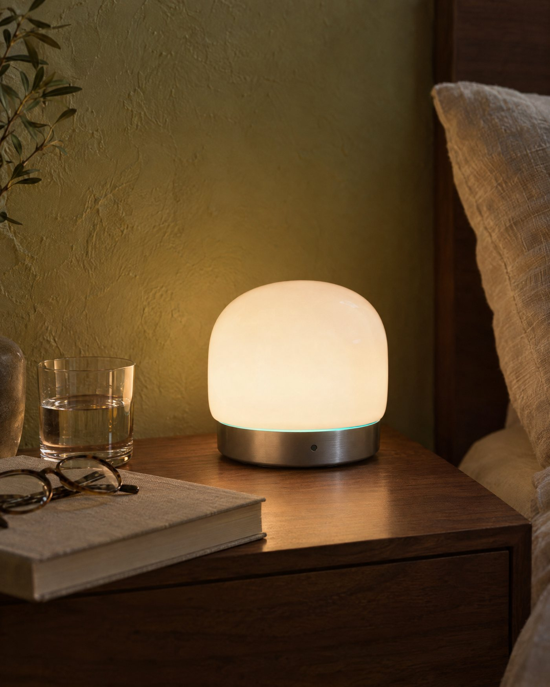
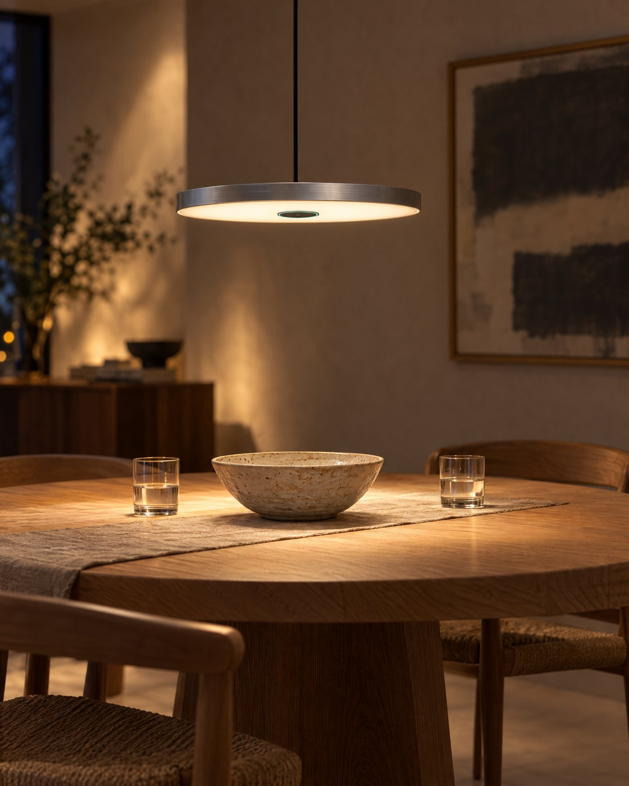
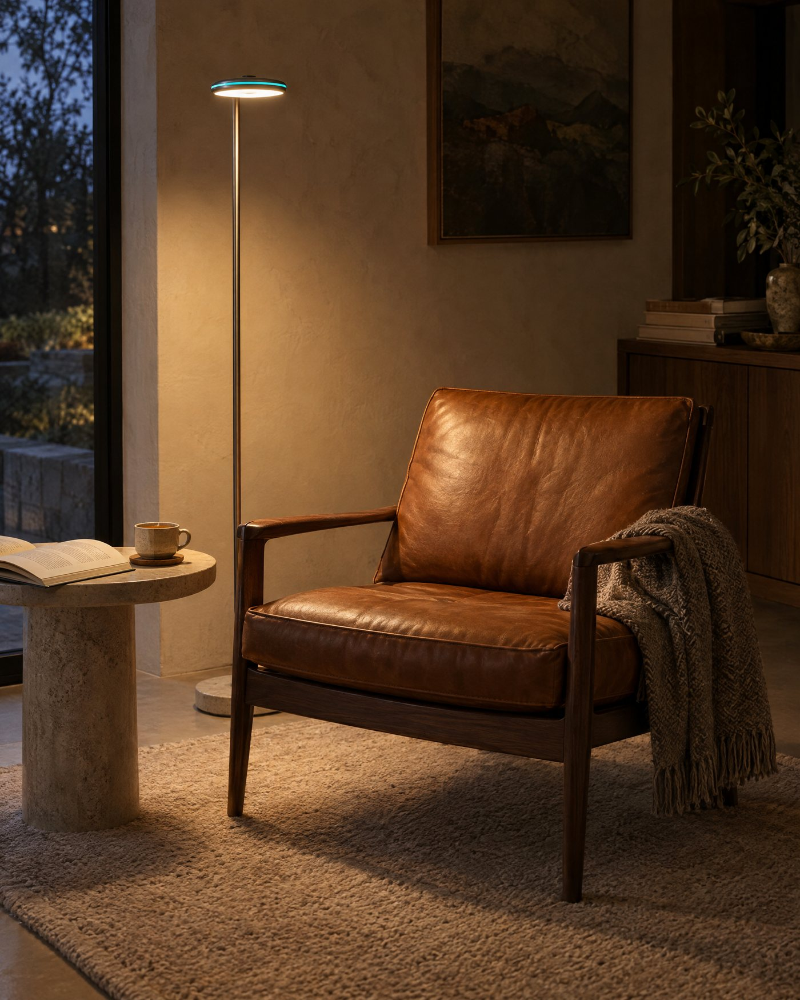
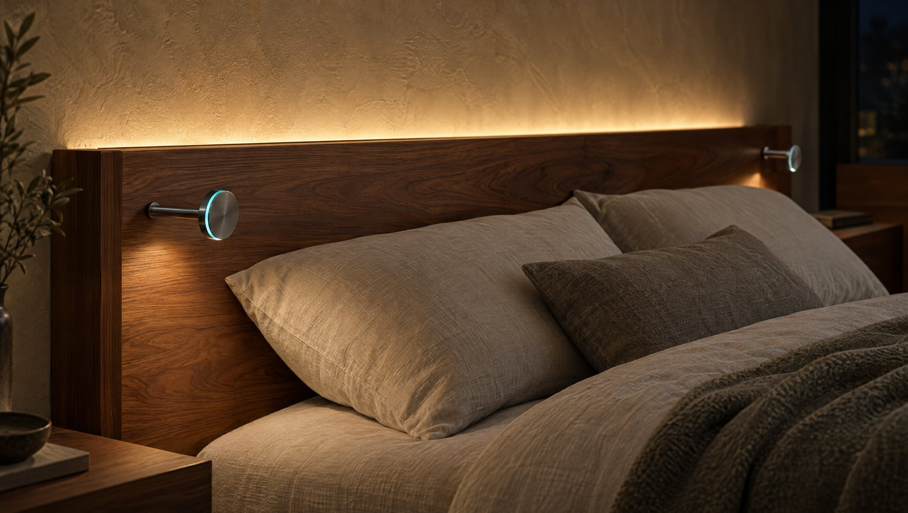
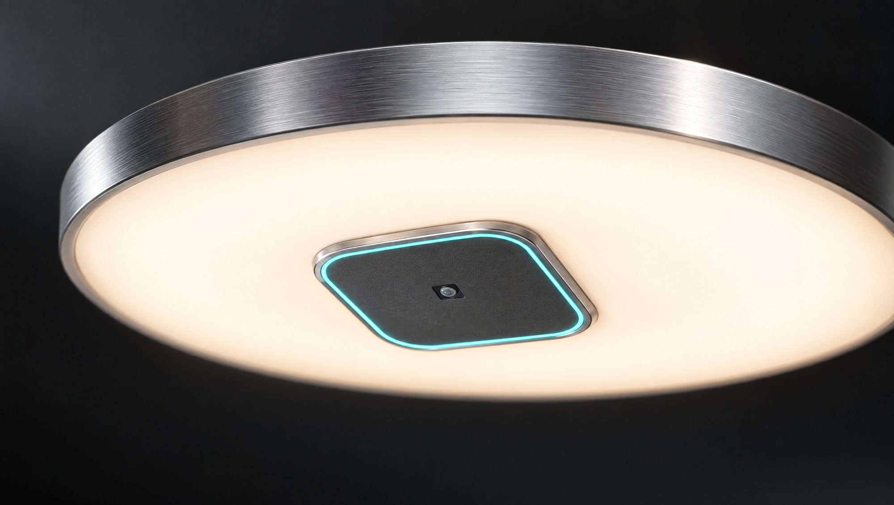

Ceiling
One in the bedroom does most of the work.

Every room already has a light in the middle of the ceiling. It has the best view in the house.
One in the bedroom does most of the work.

Closest to sleep, so it reads the night best.

Over the table, where the day actually happens.

By the favourite chair.

Comes on low when feet touch the floor at night.

Light and sensing built into the joinery.
Concept collection. Designs in development.

One sensor sits at the heart of each light. A thin line of light is the only sign it's there.